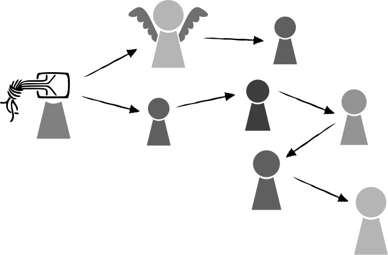

Chaos Computer Congress is THE meeting place for the world’s ethical computer hackers, running for more than 30 years each Christmas holiday in Germany. These are hackers with a distinctly humanitarian ethos, in many ways acting as a counter-balance to nefarious uses of communication technology. I personally learned all about how mobile phones can be easily exploited to spy on their user by anyone from CCC lectures. That information was first shared with the phone companies who were responsible, and when they weren’t responsive, they used CCC as a forum to release this information, forcing most German carriers to close these vulnerabilities.
To give you an idea of how the community ethos differentiates this is from other “hacker” or “infosec” events:
Please refrain from selling products or PR bullshit of any kind. We are also not open to projects with military or secret agency background at any events of the Chaos Computer Club.
After 34 years, it’s now more than 12,000 people, “160 confirmed lectures in six content tracks – all in all 130 hours of program.” How do they grow without diluting this ethos, especially when they need to cover 1.7M EUR in costs for each event? A voucher system for buying tickets - not too different from typical presales, but that combines friend-of-a-friend and community-specific tickets:
To prevent the communities surrounding the CCC from being excluded, we decided to split the ticket presale into two phases. In the first phase, a ticket will be given out to everyone who gets a voucher. We have sent vouchers to last year’s angels and speakers, to the local groups of CCC and other related groups. In the second phase, we will sell the rest of the tickets on a first-come first-served basis.
